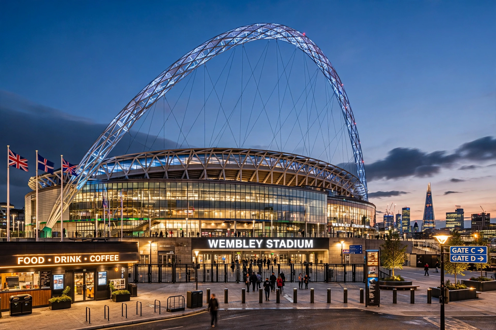

From Wikipedia, the free encyclopedia
| Wembley Stadium | |
|---|---|
 Wembley Stadium at dusk with its 133-metre arch illuminated above the roof | |
| Location | Wembley, London, England |
| Opened | 9 March 2007 (original stadium 1923) |
| Capacity | 90,000 |
| Owner / operator | The Football Association (FA) |
| Signature feature | 133 m (436 ft) Wembley Arch |
Wembley Stadium is a football stadium in Wembley, London. It opened in 2007 on the site of the original Wembley Stadium, which had stood from 1923 to 2000 and hosted the 1966 World Cup final, in which England won its only World Cup. With 90,000 seats it is the largest stadium in the United Kingdom and the second-largest in Europe.
The stadium's signature feature is the 133-metre-tall Wembley Arch, the world's longest single-span roof support structure, visible across London. Wembley hosts England's home internationals, the FA Cup final (a tradition since 1923), the League Cup final and the football play-off finals, as well as NFL International Series games, major boxing bouts and concerts. It hosted the finals of UEFA Euro 2020 (held in 2021, won by Italy over England on penalties) and the women's Euro 2022 final, in which England beat Germany; the new stadium also staged the 2011 and 2013 UEFA Champions League finals, won by Barcelona and Bayern Munich respectively.
Categories: Wembley Stadium | Football venues in London | National stadiums